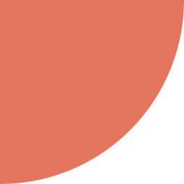
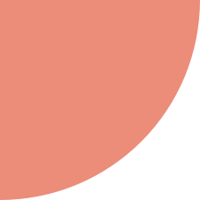
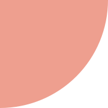
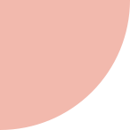
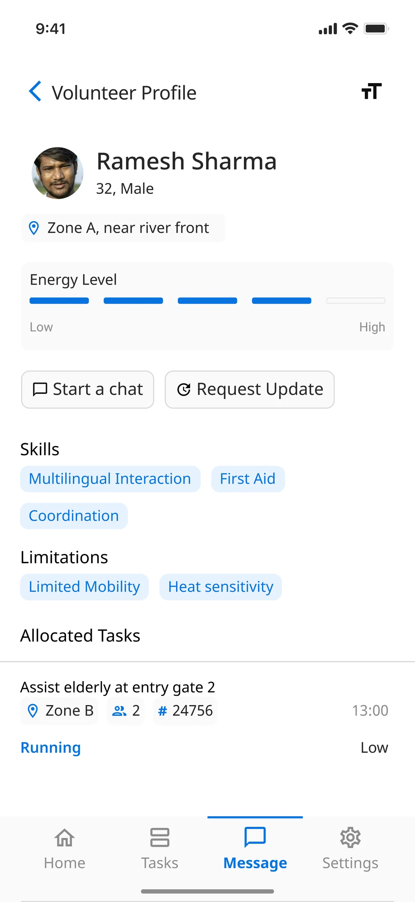
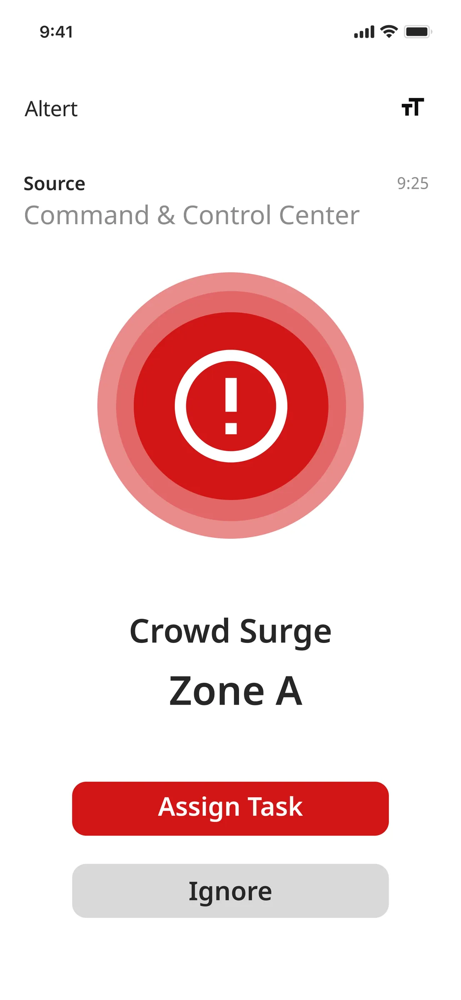
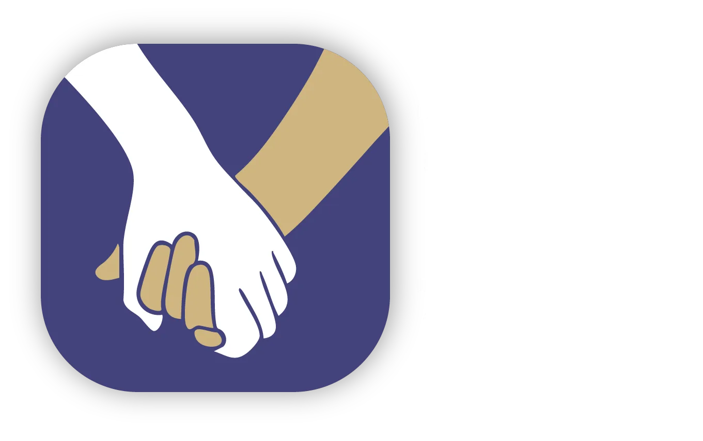
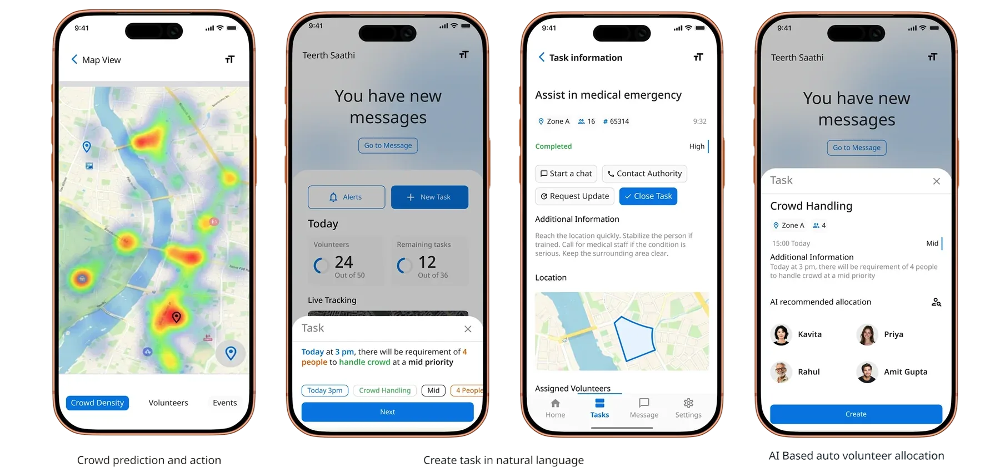
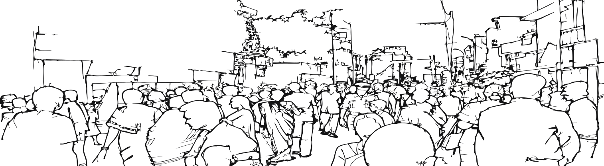

TEERTH SATHI
AI-enabled volunteer coordination platform
DURATION
2-day design hackathon
CONTEXT
Kumbh Mela / mass gatherings
MY ROLE
Domain research and UX strategy
RESEARCH METHOD
Secondary research
CORE DESIGN CHALLENGE
How might we help volunteer teams coordinate and respond to rapidly changing ground situations without overwhelming the people responsible for managing them?
A temporary city. A complex system of
A clear communication hierarchy ensures ground-level observations reach decision-makers quickly, reducing information gaps and enabling timely action.
Peak-day visits
Total reported visits
Duration of the event
07
66
45
The Kumbh Mela brings together millions of people, multiple public service departments, and volunteers operating across a large, constantly changing
environment. Coordinating people, information, and resources becomes a critical part of managing the event.

Operational Coordination
Level 01
Level 03
Level 03
Ground Operations
Command & Control
Stakeholder Hierarchy &
Coordination Network
Volunteer captains act as a critical link between ground-level information and higher-level decision-making.
Ground level info.
Volunteer Captains
Higher level coordinators
also how can volunteer captains understand what is happening, identify available resources, and coordinate responses without adding to their cognitive load?
Poor management
Critical Zone
Volunteers Allocated

Mass gatherings like the Kumbh Mela create high crowd density, where delayed risk detection and poor coordination between volunteers and authorities increase the likelihood of crowd disasters.




KUMBH MELA
Congested Zone
Controlled Zone
Clear Zone
Where coordination becomes difficult ?
Goal
Information Architecture
Command Dashboard
Workflow for a volunteer under stress
Network constraints across large geographical areas.
Fragmented communication across teams and authorities.
Battery-efficient operation
Low tech literacy among volunteers
Accessible for diverse users
Difficulty prioritising simultaneous incidents and requests.
Limited visibility into volunteer availability and zone conditions.
Cognitive overload, fatigue, and pressure during critical situations.
Low tech literacy among volunteers
Extremely high crowd density
- Pilgrims
- Volunteers
- Volunteer captains
- Command center authorities
- Medical teams
- Security forces
- Fire department
- Disaster response teams
- Local transport
- Tourism department
- Media
- Local residents
Prioritising high-impact, low-effort features for the Kumbh Mela: faster decisions at the command centre, proactive response before crowds turn critical, and seamless volunteer coordination on the ground.
Quick wins
Big bites
High impact · low risk (build first)
High impact · high risk (build with guardrails)
Avoid
Low impact · high risk
Add ons
Low impact · low risk
One-tap incident report / SOS
Live crowd-density alerts by ghat
QR check-in for volunteers by zone
Digital khoya-paya registry
Preset multilingual broadcasts
Predictive surge forecasting
Unified command dashboard
Dispatching the nearest volunteer
AR way-finding
Volunteer badges
Shift reminders and handovers
Pilgrim FAQ chatbot
Auto daily summary reports
Social feed / open chat rooms
Gamified leaderboards
1
2
3
5
4
9
10
11
14
7
6
8
15
Custom wearable hardware
13
16
12
Real time location
Goal 1
Text 7:1
Minimum text size 16 px
Objects 4.52:1 Contrast
Key Consideration
Create a task system
Goal 2
Efficient communication
Goal 3
Home
Alerts
New Task
Tasks
Daily Update
Weekly Performance
Volunteer Present
Day and Date
Status
Task name
Settings
Filter
Task Remaining
Notification
Messages
Ongoing Tasks
Priority
Task Information
Zones
Type
Volunteers
Individual chats
Volunteer group
Command Center
Government officials
Volunteer assigned
Zone division
About
Groups
Zones
Crowd density
Energy level
Authorities
Priority
Volunteers
skills
Maps
Events
Task assigned
Volunteer profile
Chat Options
Dynamic Alerts
Navigation Bar
Contrast
A centralized interface providing real-time visibility of tasks, volunteers, and crowd conditions to support fast and informed decision-making.
Volunteer profile and wellness
AI Features
Wellness
Energy level
Tracked over time based on the number of tasks, stress level and duty time.
Accessibility
Easy Mode
Text control that sits in every screen header.
Urgency
Priority alerts
Priority tasks play an alert over other apps to notify volunteers efficiently.


Priority Tasks play Alert over other apps to notify volunteers effeciently
Easy mode for text
Tracking energy level over time based on number of tasks, stress level and Duty time.
Allocation of resource based on Capabilities

Allocation
Capabilities
Resources are allocated based on capabilities.
Create task in natural language
PROTOTYPE
AI based auto volunteer allocation
Crowd prediction and action
Volunteer wellness

Volunteer Captain
Volunteer
Supervisor Volunteer
Lane 1
Volunteer
Detects an issue and, if it is critical, sends a zone alert that the system groups by zone and type.
Lane 3
Supervisor volunteer
Sees every zone, its load and its grouped alerts, and reallocates from low-load zones or marks a resource shortage.
Lane 2
Volunteer captain
Judges the alert quickly with limited time, then assigns volunteers, requests help from an adjacent captain, or escalates.

